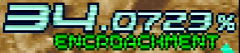

侵食率
このゲームは「作戦遂行中、常にCon-Humanから侵食攻撃を受けている」という設定のため、その度合いを測る値として「侵食率」があります。
具体的な上昇・低下の法則は以下の通りです。
上昇する行動：画面外へ逃がす(0.5～20%)
上昇率は逃がした敵の種類に依存し、また同じ敵でも領域によって変わります。おおむね、敵のサイズに比例するようです。
攻略本には全ての値が載っているので、興味がある方はご参照下さい。
低下する行動：敵を倒す(状況によりけり)
ロックオンレーザーのまとめ撃ちで倒す
複数ロックで倒すと、低下ボーナスをまとめて得られます。例えばWR-01Rがレーザー1本で倒すと約0.012%ですが、8体まとめて倒すと(総計で)3%も下がります。
詳しくは、攻略本か移植版の「GAME RULE & MATERIAL」にて1。
ハイパーレーザーと爆風に巻き込んで倒す
前述のようにまとめ撃ちで低下ボーナスがあるのですが、ハイパーレーザーや爆風で倒すと、さらにボーナスが得られます。
ちなみにハイパーレーザー発動中なら、普通のレーザーで倒してもこのボーナスの対象です2。意識領域とか、覚えておくとおトクな場面があります。
ボスを短時間で倒す(0～20%)
1～3面のボスをそれぞれ30/50/70秒以内に倒すと、20%も侵食率が低下します。ただし以降は1秒で1%減少し、20秒を過ぎると下がりません。
infinityの出現条件を考えれば、必然的にどのボスも速攻が理想ですが、様々な要因で実際の難易度は大きく変わります。詳しくは「各面攻略」にて。
何が変わるのか
難易度
何よりもコレです。前記の様に「稼げる行動で侵食率が下がる」ため、ゲームは「侵食率が低い＝上手い」と判断して、ぐんぐんハードルを上げてきます。
配置タイプ(敵の編成セット)
プレイしていて、右上の侵食率の色が変わった事は無いでしょうか?
→
自我領域を除いて、道中にはチェックポイントが存在します3。通過した際、侵食率により配置タイプが決定されますが、それが変化したためこうなるのです。
具体的には、以下のようになっています。
配置タイプ1：黄色(易) ＜ 配置タイプ2：緑(普通) ＜ 配置タイプ3：青(難)
これを知らないとやる度に敵配置が変わる運ゲーとなり、非常にツラいです。
逆に望む配置タイプへ誘導できれば、だいぶラクです。失敗しても、編成を把握していれば立て直せます。
なので、自分が挑む領域の配置タイプを覚えましょう。STGで敵の編成・配置を覚えるのは、攻略の要ですよね。
もちろん、クリアなら狙うのは配置タイプ1・・・ですが、infinityの出現条件との兼ね合いもお忘れなく。
ちなみに、1面の領域の開幕は侵食率によらず配置タイプ1で固定です4。
侵食率の増減値
同じ敵を倒しても、侵食率が低く・難易度が高いほど下がりにくくなります。酷い時には、倒しても侵食率がほぼ下がらない事も。
これは侵食率と難易度により、下げ幅に補正がかかるためです。
逆に言えば、高侵食率(≒低難易度)ならガッツリ下がるという事です。ランク調整パターンも、この仕様を逆手に取って生まれました。
エンディング
侵食率が90%になると警告が流れて、それと同時にE995が5機セットで繰り返し出ます。倒せば侵食率が結構低下しますが、ショットでしか倒せないので注意6。
同時に画面がバグり、意味不明な文字が現れ出します。この画像だと、中央の「ALERT」がそれです。

それでもなお放置していると、侵食率が100%に達して画面がノイズ→ホワイトアウトします7。
そして強制ワープしdis-humanと戦闘になる・・・訳ですが、超高難易度です。画像でお察し下さい。よしんば勝てても、バッドエンドです。
上記の条件を満たさなければノーマルエンドは確定です。簡単。
グッドエンドはinfinityを倒さないといけませんが、それには以下の条件でdis-humanを倒す必要があります。
- 全ての領域を1面に設定済み&ノーマルエンドを達成したデータでプレイする
- 3面クリア時に侵食率が25.0000%以下
要は、同じユーザーで最低5回プレイしないと出ません。マップセレクトの仕様を考慮すると、2～5回目は「New」を選べば大丈夫です。
1. 侵食率自体にかかるボーナスの記載は、攻略本のみに書かれています ↩
2. 攻略本いわく「ロック数でボーナス」なので、ハイパーレーザーさえ展開していれば良いようです ↩
3. 具体的なチェックポイントは、各領域の攻略ページで記載しています ↩
4. 自我領域にはチェックポイントもリザルト画面も無いため、変化するタイミングが存在しないのだと思われます ↩
5.E99「Proto Morphemes」 ↩
6. つまり同高度にいるため、あまり奥へ行くと激突します。お気を付けください ↩
7. ちなみにこの時破壊された敵の点は、AC版だと入りません。PS版だと、なぜか入りますが・・・ ↩